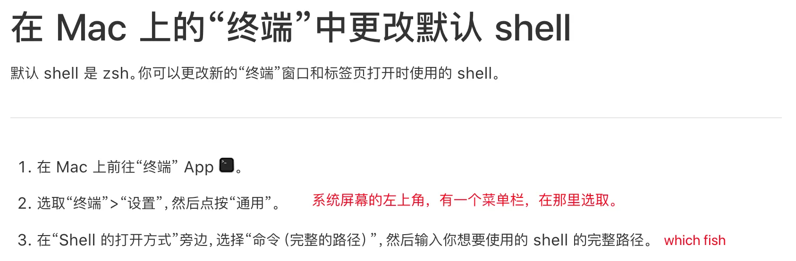

我的 Mac Mini Setup
花点时间配置一下我的Mac Mini.
配件
- Mac Mini M4 最丐版，3349
- Samsung 990 evo plus, 996
- 海备思硬盘盒+扩展坞，471
- Redmi 显示器 4K 60Hz，1449
- 鼠标，65
Setup
- 把系统装到外接硬盘里：教程
- 鼠标滚轮反向
软件
浏览器
我的需求是：Vertical tab, 以及熟悉。
因为我之前在windows用的是edge，在mac上一搜居然也有，于是就直接用edge懒得换了。
Terminal
Emulator: iTerm2:
- 主题：FairyFloss，一个很girly的主题，背景颜色改深了一点
- 字体：Jetbrains Mono
Shell: fish
- 注意去github装 fish 4，软件源上很有可能还是fish 3.7，fish 3 已经不维护了
- 设置默认shell：有两个步骤，两个都要做：
chsh命令，具体格式请问AI- 按照下面指引 
笔记
ima.copilot，主要为了省心，我并没有折腾私有部署的兴趣，对信息安全也不甚关心。
Brew换源
详见：这篇帖子
实用软件
typst
fd (replacement of find)
ripgrep